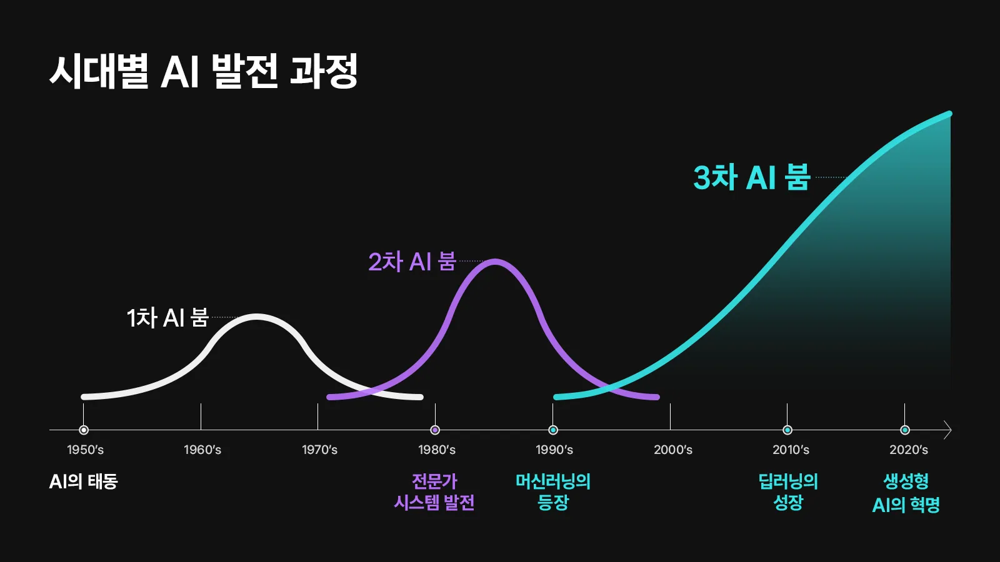
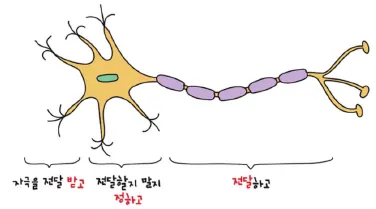

노드 · Node
입력값을 받아 계산하고 출력값을 만드는 인공 뉴런입니다.
Part 1 · Artificial Neural Network
입력 신호에 가중치를 곱하고, 중요한 신호만 다음 노드로 보냅니다. 이 단순한 계산을 층층이 연결하면 복잡한 패턴을 배울 수 있습니다.
AI Timeline · S22
인공지능이라는 연구 분야는 1956년 다트머스 회의에서 출발했습니다. 기대가 커진 시기와 성장이 둔화된 시기를 반복하며 오늘의 딥러닝과 생성형 AI로 이어졌습니다.

From Neuron to Node · S23
여러 신호를 받아 중요한지 판단한 뒤 다음 뉴런으로 전달하는 과정을, 인공신경망은 숫자 계산으로 표현합니다.

출력 = 활성화함수(Σ 입력 × 가중치)
인공 뉴런은 여러 입력을 가중합한 뒤 활성화 함수를 통과시켜 다음 노드에 보낼 출력값을 결정합니다.
Anatomy · S24–25
인공신경망은 값을 담는 지점과 그 사이의 연결, 연결의 중요도, 출력 여부를 판단하는 함수로 구성됩니다.
입력값을 받아 계산하고 출력값을 만드는 인공 뉴런입니다.
노드와 노드를 잇고 계산된 신호를 다음 노드로 전달하는 연결입니다.
연결마다 곱해지는 수로, 어떤 입력 신호를 얼마나 중요하게 볼지 나타냅니다.
들어오는 값과 나가는 값의 관계를 정하고, 신호가 다음 뉴런으로 전달될 만큼 중요한지 판단합니다.
Activation Functions · S26–28
활성화 함수마다 신호를 통과시키는 방식과 사용 위치가 다릅니다. 원본의 장점과 한계를 한 표에서 비교합니다.
| 함수 | 출력 방식 | 장점·주요 용도 | 단점·주의점 |
|---|---|---|---|
| Step | 0을 넘으면 1, 그렇지 않으면 0 | 퍼셉트론에서 주로 사용. 뉴런이 신호를 보낼지 말지 결정하는 생물학적 직관을 잘 표현 | 입력의 미세한 변화가 출력에 반영되지 않고 정보가 손실 |
| Sigmoid | 출력값은 항상 0과 1 사이 | 이진 분류 모델에서 확률을 표현하기에 적합 | 기울기 소실, 지수함수 연산이 포함되어 계산량 증가 |
| ReLU | 0보다 작으면 0, 그렇지 않으면 그대로 | 은닉층의 표준 활성화 함수. 기울기 소실 문제 해결, 매우 빠른 연산 속도 | 특정 뉴런이 계속 음수 값만 받으면 가중치 업데이트가 멈춰 해당 뉴런이 죽은 상태가 됨 |
| LeakyReLU | 음수 입력값에서도 0이 아닌 아주 미세한 기울기 | ReLU 단점 극복. 음수일 때도 가중치 업데이트 가능하며 ReLU의 장점 유지 | 음수 구간의 기울기를 설정해야 하며 ReLU보다 항상 성능이 좋다는 보장이 없음 |
| Softmax | 출력값의 총합은 항상 1 | 분류 문제의 출력층에서 사용하며 확률로 해석 가능 | 지수함수 사용으로 연산량 증가. 은닉층에서는 기울기 소실 문제 등으로 출력층에서만 사용 |
Interactive · Widget 05
공통 입력값을 바꾸면 네 그래프의 점과 출력이 함께 움직입니다. Softmax에서는 세 입력 점수를 조절해 확률의 합이 1로 유지되는지 확인하세요.
AI Winters · S29–31
인공신경망의 아이디어는 오래전부터 있었지만, 실제 성능으로 이어지기까지는 계산 자원·데이터·학습 방법이라는 벽을 넘어야 했습니다.
많은 노드와 가중치를 반복 계산하기에 당시 컴퓨터의 속도와 메모리가 부족했습니다.
깊은 신경망이 다양한 패턴을 배우기에 충분한 디지털 데이터가 모이지 않았습니다.
층이 깊어질수록 기울기 소실 등으로 앞쪽 가중치까지 학습 신호를 전달하기 어려웠습니다.
하드웨어, 대규모 데이터, ReLU 같은 활성화 함수와 학습 기법이 함께 발전하면서 인공신경망은 다시 성장할 수 있었습니다.
Quick Check
답을 고르면 바로 해설이 나타납니다.
답을 고르면 바로 해설이 나타납니다.